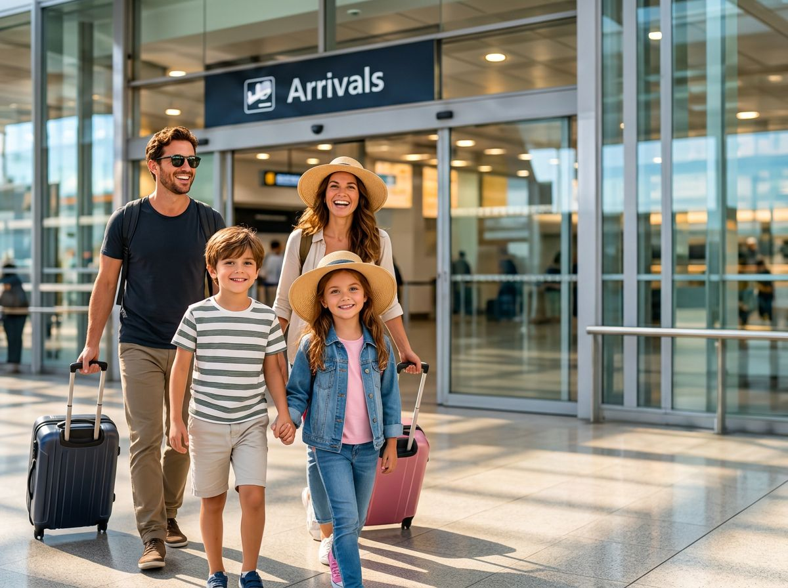

Seyahatte internetin hazır.
190+ ülkede eSIM ile bağlantıda kal. Lounge ve Vignette de aynı sepette.
Telefonum eSIM destekliyor mu?
- ⚡Hızlı teslimat
- 📱Kolay kurulum
- ↩14 gün iade
- 💬WhatsApp destek


Popüler eSIM ülkeleri
Tümünü gör →Bölgesel eSIM paketleri
Tek seferde seyahat paketi
Nereye, nasıl ve kaç kişi gittiğini seç; eSIM, lounge ve vignette'i birlikte öneririz. Birlikte alana paket indirimi.
Ne kadar internet lazım?
Gün sayısını ve kullanımını seç; doğru paketi biz hesaplayalım. Fazla GB'ye para verme, yolda da kalma.


Sıla Yolu: hangi ülkede ne gerekir?
Almanya'dan Türkiye'ye rotanı seç; vignette gereken ülkeleri, en ucuz süre seçeneğini ve gişe/HGS bilgisini tek listede gör. Plakanı yaz, hepsini tek ödemeyle al.
Havalimanı lounge
Kalkıştan önce sessiz bir köşe, yemek ve Wi-Fi. Havalimanını yaz, uygun lounge'u sepete ekle; giriş QR'ı hemen gelsin.


Gerçek gezginler. Gerçek deneyimler.
Şehir kaçamakları, aile tatilleri veya iş gezileri — eSIM ile bağlantıda kal.
Stripe altyapısıyla güvenli ödeme
Roaming'e göre %50'ye varan tasarruf*
*Yalnız örnek fiyatlar (mevcut sitedeki karşılaştırma). Gerçek tasarruf, karşılaştırılabilir paketlere bağlıdır.
eSIM kurulumu çok kolay
- 1Bağlantıyı aç
- 2Yüklemeye dokun
- 3eSIM'i ekle
- 4Kurulum hazır
Gezginler ne diyor?
Seyahat rehberi
 DESTİNASYONLARTürkiye Seyahat RehberiTürkiye'ye giderken şehir, sahil, ulaşım ve bağlantı ihtiyaçlarını tek bakışta planla.
ESIM & İNTERNETYurt dışında ne kadar internet gerekir?Harita, mesajlaşma, sosyal medya ve hotspot kullanımına göre ihtiyacını hesapla.
ARABAYLA SEYAHATSıla Yolu RehberiAlmanya'dan Türkiye'ye kara yoluyla: rota ülkeleri, vignette, bağlantı ve mola planı.
DESTİNASYONLARTürkiye Seyahat RehberiTürkiye'ye giderken şehir, sahil, ulaşım ve bağlantı ihtiyaçlarını tek bakışta planla.
ESIM & İNTERNETYurt dışında ne kadar internet gerekir?Harita, mesajlaşma, sosyal medya ve hotspot kullanımına göre ihtiyacını hesapla.
ARABAYLA SEYAHATSıla Yolu RehberiAlmanya'dan Türkiye'ye kara yoluyla: rota ülkeleri, vignette, bağlantı ve mola planı.
Sık sorulan sorular
eSIM nedir, fiziksel SIM'imi çıkarmam gerekir mi?
eSIM telefonuna dijital olarak yüklenen bir hat. Kendi SIM'in yerinde kalır; WhatsApp ve aramaların kendi numaranla devam eder, internet eSIM'den gelir.
eSIM'i ne zaman kurmalıyım?
Yola çıkmadan önce Wi-Fi'deyken kur; paketin süresi çoğu pakette hedef ülkede ilk bağlantıda başlar.
Vignette'i ne kadar önce almalıyım?
Avusturya'da online alınan 2 aylık ve yıllık dijital vignette 18 gün sonra geçerli olur; 1 ve 10 günlük hemen geçerlidir. Planlayıcı bunu hesaba katar.
İade nasıl işler?
Kullanılmamış eSIM paketlerinde 14 gün iade güvencesi geçerlidir.
Fırsat ve Sıla Yolu duyuruları
Paylaş, kazan
 YENİ
YENİ